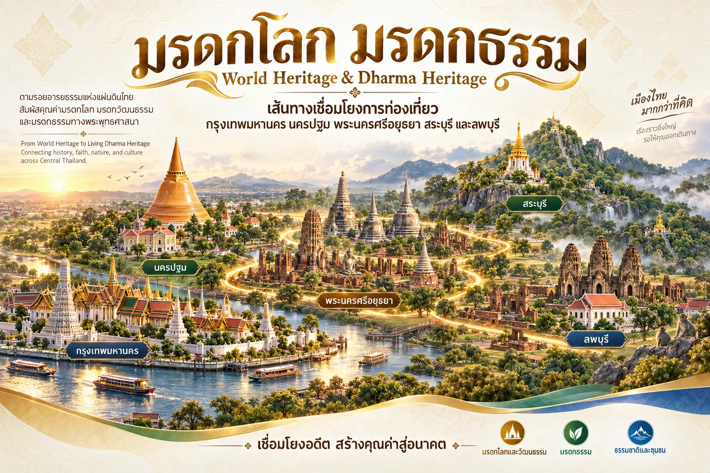

กรุงเทพมหานคร
Bangkok · ริมแม่น้ำเจ้าพระยา
จุดเริ่มต้นแห่งการเดินทาง ศูนย์รวมของพุทธศิลป์และสถาปัตยกรรมไทย จากพระปรางค์วัดอรุณราชวรารามริมน้ำ สู่พระบรมมหาราชวังและวัดสำคัญกลางพระนคร
- วัดอรุณราชวราราม
- พระบรมมหาราชวัง
- ล่องเรือแม่น้ำเจ้าพระยา

ตามรอยอารยธรรมแห่งแผ่นดินไทย
World Heritage & Dharma Heritage
เส้นทางเชื่อมโยงการท่องเที่ยว กรุงเทพมหานคร · นครปฐม · พระนครศรีอยุธยา · สระบุรี · ลพบุรี
สัมผัสคุณค่ามรดกโลก มรดกวัฒนธรรม และมรดกธรรมทางพระพุทธศาสนา
From World Heritage to Living Dharma Heritage — connecting history, faith, nature, and culture across Central Thailand.
เกี่ยวกับโครงการ
โครงการ “มรดกโลก มรดกธรรม” ร้อยเรียงห้าพื้นที่สำคัญของภาคกลาง ตั้งแต่ริมแม่น้ำเจ้าพระยาในกรุงเทพมหานคร องค์พระปฐมเจดีย์แห่งนครปฐม เมืองมรดกโลกพระนครศรีอยุธยา รอยพระพุทธบาทแห่งสระบุรี ไปจนถึงปราสาทขอมโบราณของลพบุรี ให้เป็นเส้นทางท่องเที่ยวเดียวกัน
ทุกจุดหมายเชื่อมโยงอดีตเข้ากับปัจจุบัน — เชื่อมโยงอดีต สร้างคุณค่าสู่อนาคต เพื่อให้นักเดินทางได้เห็นทั้งความงดงามของโบราณสถาน ศรัทธาที่ยังมีชีวิต ธรรมชาติ และชุมชนที่สืบทอดเรื่องราวเหล่านี้ต่อไป
เส้นทางสามมิติ · เลื่อนเพื่อเดินทาง
Bangkok · ริมแม่น้ำเจ้าพระยา
จุดเริ่มต้นแห่งการเดินทาง ศูนย์รวมของพุทธศิลป์และสถาปัตยกรรมไทย จากพระปรางค์วัดอรุณราชวรารามริมน้ำ สู่พระบรมมหาราชวังและวัดสำคัญกลางพระนคร
Nakhon Pathom · เมืองแห่งพระปฐมเจดีย์
เมืองพุทธศาสนาเก่าแก่ ที่ตั้งขององค์พระปฐมเจดีย์ สถูปทรงระฆังคว่ำสีทองอร่าม ศูนย์รวมศรัทธาและจุดเริ่มต้นของมรดกธรรมบนเส้นทางนี้
Ayutthaya · มรดกโลกโดย UNESCO
นครประวัติศาสตร์ที่ขึ้นทะเบียนเป็นมรดกโลก เจดีย์ทรงระฆัง พระปรางค์อิฐ และพระพุทธรูปท่ามกลางซากโบราณสถาน เล่าเรื่องราวของราชธานีเก่าแก่
Saraburi · ภูเขา ธรรมชาติ และรอยพระพุทธบาท
เมืองแห่งขุนเขาและธรรมชาติ ที่ตั้งของพระพุทธบาท สถานที่ศักดิ์สิทธิ์ซึ่งผู้คนเดินทางมาสักการะสืบเนื่องมานานหลายศตวรรษ
Lopburi · เมืองแห่งปราสาทขอมโบราณ
เมืองที่ซ้อนทับอารยธรรมหลายยุคสมัย พระปรางค์สามยอดสะท้อนศิลปะขอมโบราณ ท่ามกลางชีวิตริมเมืองที่มีเสน่ห์เฉพาะตัว
คุณค่าสามมิติ
World & Cultural Heritage
โบราณสถาน สถาปัตยกรรม และศิลปกรรมที่เป็นหลักฐานของอารยธรรมไทย ตั้งแต่เมืองมรดกโลกถึงเมืองเก่าที่ยังคงมีชีวิต
Dharma Heritage
ศรัทธาและพุทธศาสนาที่หล่อหลอมวิถีชีวิต จากพระเจดีย์ รอยพระพุทธบาท สู่การปฏิบัติและการสืบทอดทางจิตใจ
Nature & Community
ขุนเขา สายน้ำ และผู้คนที่ดูแลเรื่องราวเหล่านี้ เชื่อมนักเดินทางกับวิถีชุมชนอย่างยั่งยืน
ภาพรวมเส้นทาง
เมืองไทยมากกว่าที่คิด — เรื่องราวยิ่งใหญ่ รอให้คุณออกเดินทาง